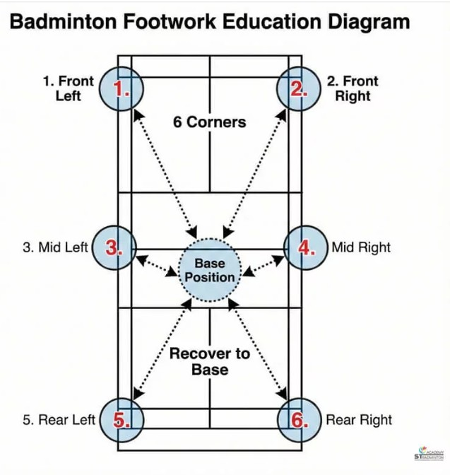
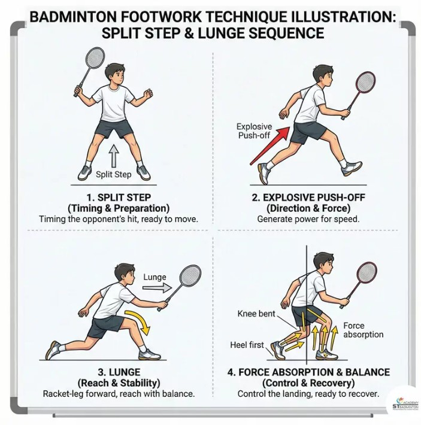
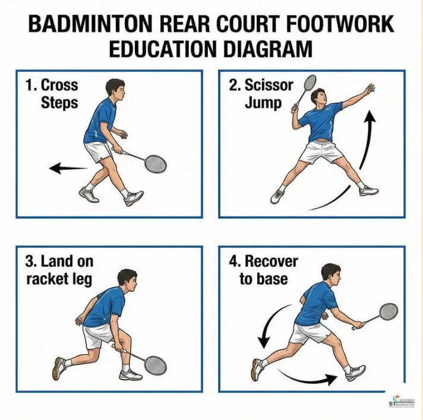
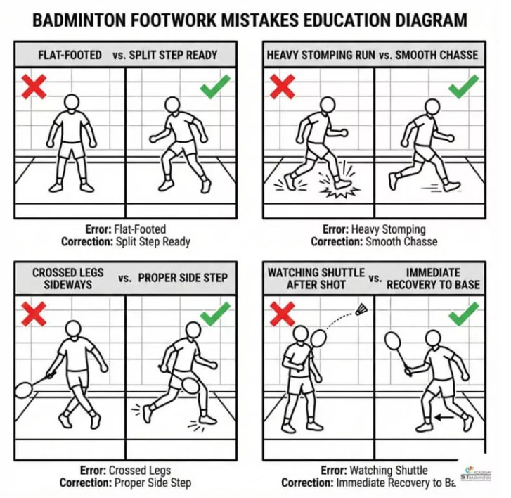
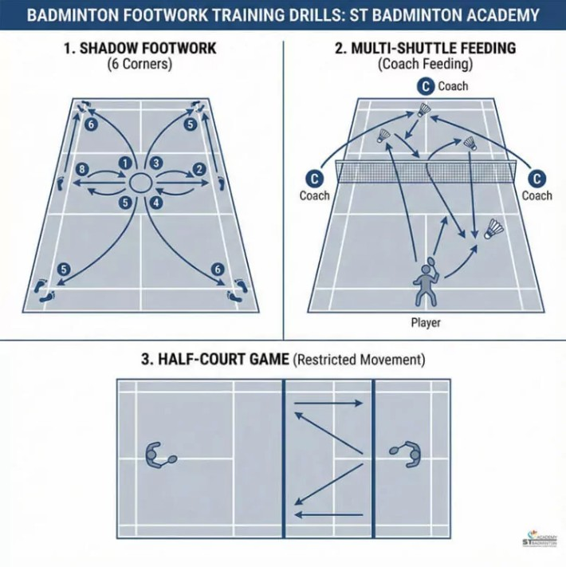
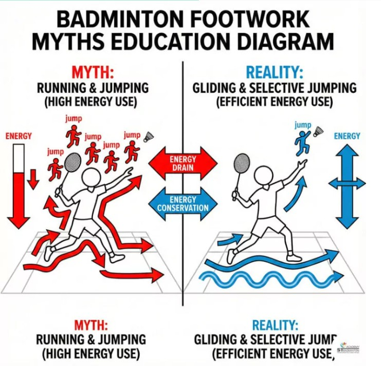
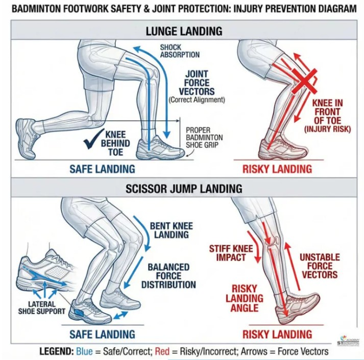

Footwork คืออะไร
Footwork คือการเคลื่อนที่ของเท้าเพื่อเข้าถึงลูกแบดมินตันอย่างรวดเร็ว ช่วยรักษาสมดุล ลดการบาดเจ็บ และเพิ่มประสิทธิภาพในการตีลูก
ท่าเตรียมพร้อมและ 6 ทิศทาง
ฟุตเวิร์กที่เริ่มจาก “ท่าเตรียมพร้อม” (Base Position) ที่ชัดเจน นี่คือจุดหลักของคุณ ซึ่งมักจะอยู่หลังเส้นเสิร์ฟเล็กน้อยบริเวณกลางสนาม ทุกครั้งหลังตีลูกเสร็จ คุณต้องดันตัวกลับมาที่จุดนี้ จากนั้นจึงเคลื่อนที่ไปยังหนึ่งใน 6 มุมหลัก: หน้าซ้าย, หน้าขวา, กลางซ้าย, กลางขวา, หลังซ้าย และหลังขวา
ในฐานะโค้ชแบดมินตันในกัวลาลัมเปอร์ ผมสังเกตเห็นว่าผู้เล่นหลายคนตีลูกได้แรงเมื่อลูกมาเข้ามือ แต่พวกเขามักจบการเคลื่อนไหวแล้วค้างอยู่ที่ใดทางหนึ่งแทนที่จะเคลื่อนที่ 6 ทิศทางและเรียนรู้ฟุตเวิร์กที่ถูกต้อง เกมของพวกเขาจะลื่นไหลขึ้น ปลอดภัยขึ้น และเหนื่อยน้อยลง
ทักษะที่จำเป็น
การเคลื่อนที่หลัก: สปลิทสเต็ป & การก้าวเท้า
“สปลิทสเต็ป” (Split Step) คือจุดเริ่มต้นที่สำคัญที่สุดของการเคลื่อนที่ มันคือการกระโดดเล็กๆ ในจังหวะที่คู่กำลังตีลูก ซึ่งเปรียบเหมือนการอัดสปริงที่ขา ช่วยให้คุณเก็บตัวออกไปยังทิศทางต่างๆ ได้อย่างระเบิดพลัง หากขาดสปลิทสเต็ป ปฏิกิริยาของคุณจะช้าเสมอ
สำหรับมุมหน้าเน็ต เราใช้การ “ก้าวเท้า” (Lunge) ซึ่งคือการก้าวยาว ด้วยขาข้างที่ถือไม้ ลงน้ำหนักที่ส้นเท้า โดยเอาเข่าเหนือจุดรับแรงกดจากพื้น และยืดข้อเท้าตรงที่สุด การฝึกฝนท่า Lunge จะช่วยให้คุณ Gombak เข้าถึงลูกหน้าเน็ตได้อย่างนุ่มนวลและคืนตัวกลับสู่ท่าเตรียมพร้อมได้เร็วโดยไม่บาดเจ็บที่เข่า
การเคลื่อนที่ขั้นสูง
แดนหลัง: ซิสเซอร์จัมพ์ & การคืนตัว
การเคลื่อนที่ถอยหลังมักเป็นส่วนที่ยากที่สุดสำหรับมือใหม่ เราใช้ “การก้าวไขว้” (Cross Steps) เพื่อเคลื่อนที่เร็ว และ “ซิสเซอร์จัมพ์” (Scissor Jump) เพื่อตีลูกเหนือศีรษะอย่างรุนแรง ในท่าซิสเซอร์จัมพ์ คุณจะลิฟต์ตัวด้วยขาข้างที่ไม่ถนัด หมุนตัวกลางอากาศเพื่อตีลูก และลงพื้นด้วยขาข้างที่ถือไม้
การลงพื้นแบบนี้จะส่งแรงโมเมนตัมของคุณกลับเข้าสู่จุดกึ่งกลางตามธรรมชาติ ทำให้การคืนตัวทำได้เร็วขึ้น ผู้เล่นหลายคนใน Cheras และ Kepong มักติดอยู่ที่มุมหลังเพราะไม่ได้ใช้ท่าซิสเซอร์จัมพ์ แต่กลับยืนเฉย ๆ หลังจากตีลูก ฟุตเวิร์กที่ดีต้องต่อเนื่อง: สปลิท, เคลื่อนที่, ตี, และคืนตัว
ข้อผิดพลาดทั่วไป
ข้อผิดพลาดที่ควรเลี่ยงใน ฟุตเวิร์ก
ผู้เล่นทั่วไปในกัวลาลัมเปอร์หลายคนมักวิ่งลงน้ำหนักเท้าเสียงดัง ซึ่งทำให้ช้าและเหนื่อยง่าย อีกข้อผิดพลาดคือการยืนเต็มเท้า ซึ่งทำให้ทำสปลิทสเต็ปไม่ได้ นอกจากนี้ผู้เล่นมักก้าวขาไขว้กันผิดจังหวะเมื่อเคลื่อนที่ด้านข้าง ซึ่งเสี่ยงต่อการสะดุดหรือข้อเท้าพลิก
สุดท้ายนิสัย “ยืนดูผลงาน” คือตีเสร็จแล้วยืนมองลูกลอยไป ซึ่งเป็นข้อผิดพลาดใหญ่ คุณต้องคืนตัวกลับสู่ท่าเตรียมพร้อมทันทีหลังจากตีลูก การแก้นิสัยเหล่านี้ด้วยแบบฝึกง่าย ๆ อย่างการเดินฟุตเวิร์ก (Shadow Footwork) จะช่วยให้ผู้เล่นเคลื่อนที่ได้เบาและเร็วขึ้น
วิธีการฝึกของเรา
แบบฝึกปฏิบัติจริงใน Setapak
ที่ ST Badminton Academy มาเลเซีย เราไม่ได้แค่เล่นเกม แต่เราสร้างนักกีฬา เราเริ่มต้นสอนมือใหม่ด้วย “Shadow Footwork” คือการเคลื่อนที่ไปยัง 6 ทิศทางโดยไม่มีลูกแบด เพื่อให้จังหวะเท้าถูกต้อง เมื่อรูปแบบการเคลื่อนไหวลื่นไหลแล้ว เราจะใช้การป้อนลูกแบบต่อเนื่อง (Multi-shuttle feeding) เพื่อสร้างความเร็วและความอึด
เรายังใช้กรวยรอบสนามเพื่อบังคับให้ผู้เล่นใช้ฟุตเวิร์กที่ถูกต้องในพื้นที่ที่เลือกลง วิธีการทีละขั้นตอนนี้ช่วยให้นักเรียนใน Setapak สร้างความจำกล้ามเนื้อ เพื่อให้ในสนามจริง เท้าของพวกเขาจะขยับไปถูกที่โดยอัตโนมัติ
ความเชื่อ vs ความจริง
ความเชื่อผิด ๆ เกี่ยวกับ ฟุตเวิร์ก แบดมินตัน
ความเชื่อ: คุณแค่ต้องวิ่งให้เร็ว ความจริง: แบดมินตันต้องอาศัยการออกตัวและหยุดตัวที่ระเบิดพลัง ไม่ใช่การวิ่งต่อเนื่อง จังหวะสำคัญกว่าความเร็วเพียงอย่างเดียว
ความเชื่อ: ฟุตเวิร์กมีไว้สำหรับผู้เล่นระดับสูงเท่านั้น ความจริง: มือใหม่ควรเรียนรู้ฟุตเวิร์กก่อน การเคลื่อนที่ที่ดีทำให้ตีลูกง่ายขึ้น ถ้าคุณเข้าไม่ถึงลูก คุณก็ตีไม่ได้
ความเชื่อ: คุณต้องกระโดดทุกช็อต ความจริง: การกระโดดทำให้เหนื่อย ผู้เล่นที่มีประสิทธิภาพจะย่อตัวต่ำและกระโดดเมื่อจำเป็นเท่านั้น (เช่น การสแมช) การก้าวเท้าที่นุ่มนวลช่วยประหยัดแรงสำหรับเกมยาว
ความปลอดภัยต้องมาก่อน
การปกป้องเข่า & ข้อเท้า
ฟุตเวิร์กที่ถูกต้องไม่ใช่แค่เรื่องความเร็ว แต่เป็นเรื่องความปลอดภัย เทคนิคการ Lunge ที่ถูกต้อง (เข่าไม่เลยปลายเท้า) จะช่วยป้องกันการเจ็บเข่า การลงสู่พื้นอย่างมีการควบคุมจากการกระโดดจะช่วยปกป้องข้อเท้าของคุณ ที่ ST Badminton Academy เราเน้นให้นักเรียนใน Setapak เรียนรู้รูปแบบการเคลื่อนไหวที่ปลอดภัยเหล่านี้ เพื่อหลีกเลี่ยงการบาดเจ็บที่มักเกิดกับผู้ที่ฝึกเล่นเอง
เรายังเน้นเรื่องความสำคัญของรองเท้าแบดมินตันที่ดี และการตรวจสอบสภาพสนามในกัวลาลัมเปอร์ ผู้เล่นที่ปลอดภัยคือผู้เล่นที่สามารถสนุกกับเกมได้ตลอดชีวิต
↔️ Side Step
การก้าวเท้าไปทางซ้าย–ขวา รักษาระดับลำตัวให้ต่ำ เหมาะสำหรับการรับลูกด้านข้าง
ใช้รับลูกข้างสนาม⬆️ Forward Step
ก้าวเท้าไปด้านหน้าอย่างรวดเร็ว ใช้ตอนเข้าหาลูกหน้าตาข่าย
ใช้กับลูกหยอด⬇️ Backward Step
ถอยหลังโดยไม่ไขว้เท้า เพื่อรักษาสมดุลและป้องกันการล้ม
ใช้รับลูกยาว🦘 Lunge
ก้าวยาวพร้อมย่อเข่า ใช้รับลูกสั้นใกล้เน็ต
ใช้รับลูกหน้าตาข่ายข้อผิดพลาดที่พบบ่อย
- ยืนตัวตรงเกินไป
- ก้าวเท้ายาวเกินควบคุม
- ไขว้เท้า ทำให้เสียสมดุล